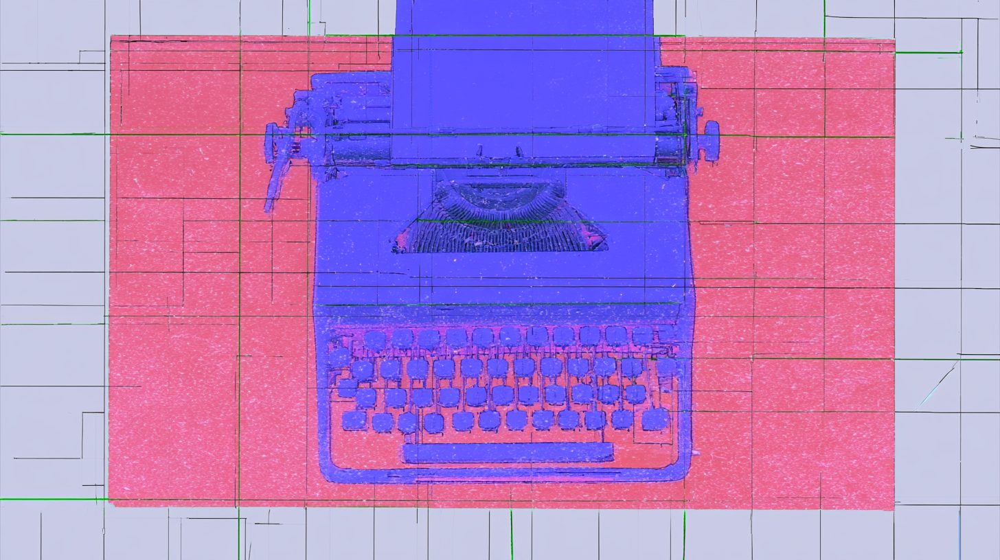

BTS pulling out of the Grammys reads like a one-off until NPR Music traces the lineage: the 1989 rap boycott, Frank Ocean's "Kaepernick moment," Tyler calling "urban" a backhanded compliment. The new best Asian pop category lands in that same bind, a spotlight that doubles as a cordon, acknowledging K-pop's gains by walling them off from the general field.
POW Mag remembers Lloyd "Young L" Omadhebo, The Pack's producer and architect of a Bay Area sound, who died at 39. From a closet in his parents' Berkeley crib, he built the "Vans" beat in under five minutes, took hyphy's otherworldly bounce and revamped it for a generation raised on skateparks and MySpace rather than street politics. The through-line, from Pink Dolphin's pastel streetwear to Lil B's launch: it's OK to be a little goofy, and that lightness still informs West Coast rap today.
Andre Gee, writing in his newsletter, borrows a basketball scout's line about a raw prospect being "two years away from being two years away" to make a case about young rappers: the label system that once molded them, the A&Rs, the producer mentorships, is gone, so they're finding themselves in public with no room for error. Think of how fast we quote-tweet a debut into oblivion.
01Music & SceneWriting about music and the culture around it. Criticism, profiles, interviews, and scene reporting, selected for insight rather than news value.
Mexico's state-by-state crackdown on narcocorridos just claimed its biggest target: Gabito Ballesteros, 27, had his Queretaro set halted after performing "AMG," a nearly billion-stream ballad referencing cartel cars, despite a pre-approved song list excluding it.
Rock-meets-Shakespeare is usually a naff disaster, but The Guardian argues the RSC's Hamlet redeems Radiohead's uneven 2003 album precisely by editing it. A five-piece jazz band reworks the tracks into Thom Yorke's "shattered pieces," jettisoning the lesser songs and recontextualizing the rest: Sail to the Moon soundtracks Ophelia's madness, The Gloaming her funeral. The cutting proves Yorke a good judge of his own catalogue.
The corrido has always been a man's form: revolutionaries, outlaws, and now narcos. The New York Times profiles Vivir Quintana, who spent a decade interviewing women jailed for killing their attackers and turned those testimonies into corridos sung in their voices. Her 2020 anthem 'Cancion Sin Miedo' reached the Pelicot trial in Avignon; she's now up for a Latin Grammy with Juanes.
Xania Monet dominated the inaugural AI Music Awards (AIMAs), winning AI Song of the Year, AI Artist of the Year, Best AI R&B Artist, and AI Album of the Year across two ceremonies in Los Angeles. The awards were presented by the Sonic Intelligence Academy with peer voting from verified artists in the SIQA Registry.
If opera hits hardest because the instrument is the body, it's also why the form lags on access. National Sawdust's inaugural Makemake festival (Nov. 17-20) makes the case with three disability-led works, including Paola Prestini's "Sensorium Ex," whose autistic actor uses AI built at NYU to turn his own vocalizations into an expressive voice. The plot, fittingly, turns on vocal autonomy.
Jay Bragg, who's logged 1,500 gigs on Lower Broadway and never once gotten a Thomas Rhett request, argues country swapped taste for team loyalty and kept calling it taste. Fans root for the jersey, which is why they went nuclear over the CMA snubbing Sammy Kershaw while A-listers stayed quiet.
An essay exploring the concept of being 'out of tune' both musically and socially, using Percy Sledge's 'When A Man Loves a Woman' as a case study. The piece examines how musical imperfection can convey emotion, and how social dissonance has been a driving force in rock music and the music industry.
An essay examining how fandom has become increasingly visible and monetized in mainstream culture, discussing the surveillance of fan spaces, the superfan economy, and the implications for fan privacy and anonymity in the wake of AO3's outage.
Rick Rubin gets credit for putting guitars in Run-DMC's sound, but George, who shared a Queens apartment with the producers in hip hop's genesis, sets the record straight: it was Larry Smith and Latino guitarist Eddie Martinez on "Rock Box." Prompted by Dr.
The Seat of Loss applies the capsule-review format to the AI-generated songs going viral since Fenix Flexin's chart hit, rating each on a scale where five means 'almost as good as party rock anthem.' Nothing clears a three. The sharpest entry is 1010Benja's 'Semiramis' Dream': a genuinely gifted vocalist, cut from XL, treating a $25 Suno subscription as a shortcut back to the resources he's lost.
02Music Industry AnalysisAnalysis of the music business. Deals, streaming economics, rights, and the power dynamics that shape what gets made and who gets paid.
A single tout holds over 2,000 of the 7,819 U2 tickets listed on StubHub, standing to clear £1m at four times face value, while StubHub's CEO publicly deplores the bots that likely supplied them. The Guardian lays out the circular blame (Ticketmaster points at resale sites, resale sites point at primary sales) as Nandy's long-promised tout ban slips toward 2027.
A conversation between Keith Jopling and Nays, the creator of the My9Albums web app, discussing the viral trend of sharing nine favorite album covers, its origins from a Japanese web app, and what the most-picked albums reveal about music preferences across generations.
While the major labels' suits against Suno fight over training inputs and copyright, the Elvis estate's new case takes a different route: publicity rights under Tennessee's 2024 ELVIS Act, with video of Suno playing voices that sound just like the King as evidence. Billboard explains why this likeness-focused angle could hand individual artists leverage in AI licensing fights, especially absent any federal NO FAKES Act.
Slayyyter sold out all 20,000 seats at Madison Square Garden without a top 20 single, and Hypebot uses her ascent (alongside FKA twigs and Cleo Sol) to argue the arena tier has been redrawn by post-pandemic demand. Concert grosses ran 61% above 2019 in 2025, letting "niche" pop acts scale up well past what their chart numbers would once have allowed.
Missy Mazzoli and Royce Vavrek's new opera, adapted from George Saunders, sold out all nine fall dates, so the Met is livestreaming the finale free on YouTube for the first time. The Times reports the $1 million transmission earns nothing directly; Peter Gelb is betting the reach feeds a $1.5 billion fund-raising campaign, with an onscreen donate button starting at $1.
The majors don't hate AI, Vinyl Culture argues: they hate AI that doesn't pay them, and the lawsuits are how they set the price. The piece tracks Suno's admission that it stream-ripped YouTube via YT-DLP to build training data, a DMCA claim Judge Saylor called plausible, with a theoretical damages ceiling now above $9 billion across the expanded suits.
NPR reports the Kennedy Center is dropping Tessitura, the nonprofit platform built for arts institutions to manage ticketing, fundraising, and donor data, for Ticketmaster, a swap negotiated while then-president Richard Grenell sat on Live Nation's board for $260,000.
Billboard reports that Iceland Airwaves scrapped its headliner model for 2026, moving Shygirl, Daði Freyr and The Streets into standalone paid shows outside the main program to court new audiences and ticket revenue. Rising venue costs forced it to drop the Reykjavík Art Museum. The sharpest stat here: Icelandic artists make up just 17% of what young Icelanders actually stream.
03Music RecommendationsNew and recent music worth hearing. A featured pick plus additional recommendations, each with brief context and a link to listen.
Lamniformes calls this the kind of music that makes you want to place unlikely bets on Eastern Conference NBA playoff games while your life falls apart. Its mix of pitched percussion and repetitive woodwinds pulls hard toward Steve Reich, catnip for a self-professed sucker for minimalism.
REC 01
Solana
Girl From the West
♪ Afropop / Yoruba R&B
The Lagos singer-songwriter's debut EP, sung in Yoruba on her own terms. Raised on Fuji, the percussion-driven Yoruba genre built on call-and-response vocals and Islamic poetry, Solana folds that lineage into pop and R&B without committing to a lane. Standout "O rí mi" ("you see me") is her most vulnerable turn, a love song about being truly seen.
The cellist-trained singer, who made Glass Lit Dream alone in a Richmond basement, builds churches out of his own layered chest voice and falsetto. On 'Love Is...,' a lower-register chant ('Using you, you hurt me') duels an extended close harmony up top; he fiddles the pronouns, strips it to the chant, then lets the falsetto soar as both voices interrupt each other. He argues with himself and loses.
Denuc, a French electronic musician based in Brussels with a PhD in musicology, built this record from compositions for a MIDI-controlled pipe organ at St. Antonius Church in Düsseldorf. The historic instrument was programmed to play minimalist and trance-like loops that reverberate across the cathedral interior.
René Löwe grew up in East Berlin tuning into Western radio for Detroit techno, then fell into the minimalist scene around record store Hard Wax alongside Moritz von Oswald. Reductions collects six long tracks that loop synth lines modulating gradually over steady drums.
The Barcelona musician has invented a musical language singular enough to defy description: a fusion of post-Romantic tonalities (Satie, Debussy, Scriabin) shot through with piercing vocalizations descended from Meredith Monk, konakkol vocal percussion, and acoustic instruments in shards. A little bit Disney, a little bit Raymond Scott, a world of bracing dissonance and zig-zagging lines.
Recorded at Leipzig's St. Thomas Church on the 'Bach organ,' a replica of the 1696 instrument Bach's uncle designed, this draws out the organ's unequal temperament and variable frequency graduations. With Sunn O)))'s Stephen O'Malley on guitar and Lucy Railton on cello, captured across 20 microphones close and far. Laura Snapes called it, in drone world, 'Kali Malone's pop record.'
A project Boyd has been dreaming about since he was 13, released on his own Exodus label. Fairly called a gospel album, it balances postmillennial UK jazz, soundsystem culture, deep spirituals and R&B, and features a group of vocalists from the extended Boyd family he calls 'the kitchen choir.' The video for 'Say Yeah' incorporates footage of Boyd working with kids at the Woolwich Creative Club.
Brian Leeds, whose Huerco S. work specialized in sticky, charcoal-hued textures, moves into sleeker territory as Loidis: brushed stainless steel, graphite against paper. A direct extension of 2024's One Day but crisper and more hypnotic, with a lot of Luomo in its chordal flicker and percussion that's an expression of clicky bliss. The dozen tracks run eight to twelve minutes with no drops, no climaxes, no hooks, just crosshatched expanses of overlapping rhythms. Out on Anthony Naples' Incienso label.
Flow State picks the title track from Samantha Poulter's new album as part of the mix's quickening pace, slotted alongside Loidis and Charanjit Singh as the energy picks up.
Jörgen Löwenfeldt's short story from The Bagatelles uses a 2008 blog award as its fulcrum: a wedding guitarist named Kristian Mørk gets recognized by a hesitant guest, and what unspools is a portrait of a particular online moment when independent writing felt like a genuine alternative economy.
A Different Lens uses the November 13 FAA ground stop as a stress test for the authoritarian efficiency bargain: the promise that cutting oversight and centralizing control makes systems faster. The piece works through Fela Kuti's 'Go Slow' as its structural metaphor, then layers in the GAO's finding that 75 percent of FAA air traffic control systems were unsustainable before any recent policy decision, and the documented waiver of acquisition-management safeguards. The router failure had a proximate cause; the national propagation of that failure demands an institutional one.
The FADER argues that Koji Kondo's 1998 Ocarina of Time score was perfect because of its hardware limits, not despite them: grain and compression wrung from N64 memory constraints. The Switch 2 remake, freed of those limits, plays it safe, reinserting uncompressed original samples as hollow 'remember that' novelties. With more resources than ever, it does less. A game about refusing to live in the past, trapped in it.
05Sound on Sight Video ArchiveOne music video from the archive in each issue, ranging from a few months to sixty years old, with a short note on why it holds up.
▶
Jim WIlson — "Center Core Never More"
Early 90s · instrumental rock
Jim Wilson plays guitar the way you'd expect from someone who spent years alongside Harvey Mandel and Rcollins: dense, exploratory, allergic to the tidy hook. "Center Core Never More" is the kind of early-90s instrumental that got buried under grunge, worth pulling back up for the way the tone keeps mutating under your ear.
SOS 01
The Stripes
Ecstasy (Plattenküche)
♪ 1980
The singer is Gabriele Kerner, three years short of '99 Luftballons.' The Stripes were her first band, formed in Hagen in 1979 and finished by 1982. The show is Plattenküche, a WDR variety hour with fountains, a filing cabinet that toppled every week, and a working kitchen where the co-host cooked dinner on air.
Nick Uff, a gardener by trade, drew it frame by frame on 16mm without a storyboard, letting the film go where it took itself. That scratchy hand-made animation sits over an arpeggio Adrian Utley couldn't get a sequencer to play, so he recorded the notes one at a time and edited them into the loop.
Before Tom Rubnitz became downtown New York's patron saint of camp, he helped make this: a performer named Frieda rapping backed by a chorus line of dolls, production values scraping the floor on purpose. 'Plastic Rap' is Lower Manhattan circa 1980 deciding that cheap and ridiculous could be an aesthetic, not a limitation.
Spike Jonze gives Ludacris a pair of prosthetic Popeye arms and aims them at a man who won't observe bathroom etiquette. Interestingly enough, the man is Fatlip, the Pharcyde rapper whom Jonze had filmed four years earlier narrating the worst day of his life. In 2004, he is still the one getting hit.
Zürich, 1981. Mother's Ruin had been going since 1978, early enough that Swiss punk barely existed, and director Paul Grau shot 'Lost in Town' for the 'Want More' LP while the scene was still inventing itself. Snarl from a country nobody files under snarl.
Out of Los Angeles, Dorothy Fuzz stack sweet vocal harmonies over trippy psych and title the album 'Mad Art For A Mad Age,' which about covers it. '1 2 3 Understand Me' keeps reaching for connection and dissolving into haze before it can close the gap. Sunshine on top, something woozier underneath.
Jonathan Glazer sends a man stumbling through a tunnel, getting hit by cars over and over, muttering Thom Yorke's looped prayer. Each impact lands harder than the last until the final one doesn't. UNKLE and DJ Shadow built the track from dread and strings; Glazer turned it into a parable that earns its resurrection.
Spike Jonze films it like a pratfall in slow motion: Fat Lip narrating his own worst day, every small humiliation landing square on the beat. It's tragi-comedy played dead straight, an itemized series of humiliations played with a stand-up's timing. The Pharcyde's sharpest tongue turns self-loathing into the funniest, saddest three minutes the West Coast underground ever produced.
A Romanian pop grande dame, who'd spent five decades exploring the outer boundaries of samba, soul, and disco-pop, takes Pulp’s 'Common People' and sings it in her own language. The pairing is the pleasure: a voice raised on the state airwaves wrapping itself around a Britpop anthem about class.
06Image & ReinventionPersona as mask, weapon and burden: from Nancy Sinatra and Madonna to Drake and Charli xcx, how pop stars build an image, and what remaking it costs.
Persona has always been a bit of a trojan horse, a mask that hides the artist and their intentions. Cardew argues that Nancy Sinatra played the game well. Her catalog is “a bottle of cheap bourbon spiked with basement psychedelics,” sold with a wink and a beehive, as well as a notable assist from Lee Hazlewood. Before reinvention became a requirement, Sinatra showed that persona could be its own medium: something you work within, not just wear.
Some artists treat persona as protection, a mask to work behind. Madonna turned it into a weapon, and she’s maintained that stance now for 40+ years. The recently canonized Confessions II is a spiritual sequel to her 2005 dance-floor peak, and POW Mag surveys the current panic over pop's male gaze (Sabrina's leash, Olivia's babydoll dresses) and concludes that Madonna got there first (and weathered worse). The image is always hers, and her sexuality was never for men. That's what artistic control looks like.
Here's what it looks like when image maintenance fails in public. Gee argues that Iceman's chart performance masks the real story of a historic 24-hour, hype-drenched listener drop, followed by a wandering indifference, and people simply moving on. Drake wins the numbers game while losing the persona war. Gee's verdict: “ICEMAN depicts a guy eroding an already withered rap persona with incessant scorn over a self-inflicted L.” The gap between sales and so-called credibility has never been more apparent.
The binary between sales and credibility has always been a bit wobbly. Freedman takes "Lizzo's Pass" (the old fork between chasing Pitchfork acclaim or Target sales, named for the artist behind pop's most spectacular recent flop) and shows the data behind the collapse. Sure, Swift went commercial and watched her scores slide, and Doja stumbled trying to split the difference, but Charli and Olivia showed that you can get cake and a BNM plaque too. In 2026, it pays to be a (music) nerd.
The sorting machine that files music as pop or art runs inside the critics too. Wilson uses Phoebe Bridgers' first album in six years, and her leap from indie fragility to Met Gala fame, to catch his own pop-versus-art reflexes in the act, the same ones he set out to dismantle in Let's Talk About Love. Twenty years after poptimism supposedly settled the question, one of criticism's sharpest minds finds the sorting machine still running in his own head.
Charli XCX gets the last word because she offers an exit from the persona war entirely. She spends much of the essay wrestling with what makes one uncool, from creating safe, functional music aimed at the masses (“The second you apply a ‘something for everyone’ approach to art…is the moment that coolness dies”) to allowing oneself to become over-commercialized (“This is when I feel that things become broad, things become passé, things become boring”). In the end, she says the only way to maintain one’s cool factor (and perhaps sanity) is to opt out of the optics arms race and embrace the chaos.
07StorylinesStandalone features that follow one story in full. Each gathers the coverage as it appeared, annotated and in sequence, with a written introduction.

Watching the Watchmen: On AI Composition and Detection
21 articles · story collection
After AI slop overwhelmed their services, the platforms struck back, with Substack releasing an AI detection tool and LinkedIn adding a button that lets users report slop. Whether this was good stewardship or evidence of a witch hunt is an open question, and we dive into the debate with 21 articles that wrestle with how we value AI (and human) writing.
Me and the Devil: Fenix Flexin's AI Authorship Fight
11 articles · story collection
Maybe Fenix Flexin won't be remembered as the Elvis Presley of AI music, but his track "Rubberz", which delivers street-rap verses over '80s synth-pop, reached the Hot 100, drew months of accusations, and ballooned into one of the biggest stories of 2026. We track the story's twists and turns, and consider where we're going (and where we've been).
Between a billion dollar Michael Jackson biopic, a blockbuster Madonna album, and the return of "Wonderwall" and "Mr. Brightside" to the charts, 2026 could be defined not so much by what we created, but by what we remembered. We survey the landscape, and consider what it means when culture turns into a hall of mirrors.
For years, the labels sued to stop fans from generating AI covers of licensed content, and then Universal and Spotify signed the deal for a tool that does just that. Beneath the product announcement lies the story of how billion dollar catalog acquisitions have created incentives for the industry to recycle the catalog rather than invest in new music.
Miles was the avatar of cool who kept detonating his own styles, a privileged Black artist who declined every story offered to him about privilege or suffering, and both an undeniable genius and a man who hurt others, particularly women. And a hundred years on, he remains a mystery and a contradiction, which is probably what he would've wanted.
08After the SubscriptionSubscription growth is maturing, so the industry is selling intensity: moments, objects, rooms, remixes. Ten pieces on the money after the subscription.
In a forecasting report for August 2026, the esteemed MIDiA Research projects $121.1 billion in recorded-music retail revenue by 2033, with much of the fastest growth occurring outside of the subscription model. Fan-economy segments reach $18.5 billion, expanded rights become the industry's second-fastest-growing revenue source, and retail outruns trade across the projection. Streaming remains dominant, but listener ARPU gains come from pricing, new tiers, add-ons, and fewer free trials.
Despite years of hype, the superfan subscription already failed, at least according to Bruce Houghton. The author tallies the wreckage: Vault dropped paid subscriptions inside two years, Patreon's free memberships now outnumber paid four to one, and Spotify's promised superfan tier stalled out before achieving liftoff. Subscriptions force artists into a schedule that doesn't match how they create, Vault CEO David Greenstein says. Instead, discrete high-intent moments (the release, the listening party, the merch drop) are what matters.
The playlist playbook is losing its grip, argues George Ergatoudis, a former Spotify and Apple Music curator who spent years running that playbook. The evidence he presents is operational. Irish band BABYRAT delayed streaming releases to collect fan contacts at shows; Ren's team leaned into reaction videos, while Ren built Discord communities, Patreon memberships, and merch; and Compost Compost Compost, managed by Jamie Oborne, chooses mastery over momentum. As AI makes music abundant, the truly scarce goods become fans' attention, trust, and identity. More than anything, fans need to feel a sense of ownership.
Fans are paying for scarcity and connection now, Jeremy Young reports at Hypebot, and the trend of limited-edition merch is the evidence. Chicago's Surge Iconics launches crystal tickets and gold-plated collector cards in collaboration with KISS, Styx, and the Lost Lands Festival, while artists at every level ship hand-numbered lyric notebooks, signed test pressings, limited-run cassettes, behind-the-scenes zines, and monthly mystery packages. Many of the objects cost little to produce. Patreon normalized paying for access; the same instinct now buys handwritten lyric sheets and personalized videos.
While the titans of recorded music theorize about superfan monetization, Live Nation is building the physical version. Music Business Worldwide covers Michael Rapino's plan to remake venues along the lines of sports arenas, with premium experiences taking up to 30 percent of venue capacity. People will pay for a better experience, Rapino says. The early results are on-site spending above $100 a head at the Hollywood Palladium and a 30 percent lift at Amsterdam's Ziggo Dome.
Spotify's Reserved went live in June with a specific mechanic: engagement signals identify an artist's top listeners, and the platform holds two concert tickets for each ahead of public sales. Role Model was the first artist, with the rollout running through Live Nation and Ticketmaster for US Premium subscribers. Eligibility watches for bot inflation, and background listening won't tip the scale. Sarah Perez notes at TechCrunch the detail that gives the strategy away: Spotify takes no fee on the transactions. The product is the funnel from stream to seat.
Booking agents read Spotify Reserved as a data play, and Ciaran Donnelly captures their concerns in a recent piece for IQ. The anti-scalping pitch masks the real prize: keeping tour data inside Spotify's walls, with the platform deciding who counts as an artist's top fans. One agent warns it is infrastructure, not a pilot. At stake is the streaming, location, and purchase intelligence that shapes touring decisions.
The recording stopped being the product the moment it became infinitely available, Donny Slater argues, and the industry keeps trying to solve the wrong problem. The alternative Slater offers is to treat the master as a loss leader for an artist-owned universe, the way Nipsey Hussle used his music to propel his lifestyle brand, The Marathon. The barrier Slater names is traditional advances, which buy up tomorrow's guaranteed cash flow and are incompatible with genuine entrepreneurship.
The add-on economy showed up in Spotify earnings. On Spotify's Q2 call, per Billboard Pro, co-CEOs Alex Norström and Gustav Söderström told investors the much-hyped AI remix tool has strong momentum ahead of launch (Universal and Merlin licensed, covered artists opting in to be remixed for compensation and credit). Meanwhile, Reserved held nearly 100,000 tickets since late June, selling through full allocations on some tours until Live Nation upsized them mid-run. For Spotify, it's not just about the streams anymore.
The closer: growth's next markets pay artists only if the plumbing works. Downtown Music Publishing Africa reads IFPI's last two Global Music Reports side by side: global recorded revenue accelerated to 6.4 percent growth and $31.7 billion, while Sub-Saharan Africa gained 15.2 percent on revenues of $120 million, with South Africa taking 78 percent of the region's share. The regional table moved too, with Latin America overtaking Africa as Asia rebounded. The essay's argument is deliberately unglamorous: sustained growth depends on covering the basics of accurate metadata, clean splits, and proper registration. It's the rights infrastructure that decides whether expanding markets pay the people who make the music.